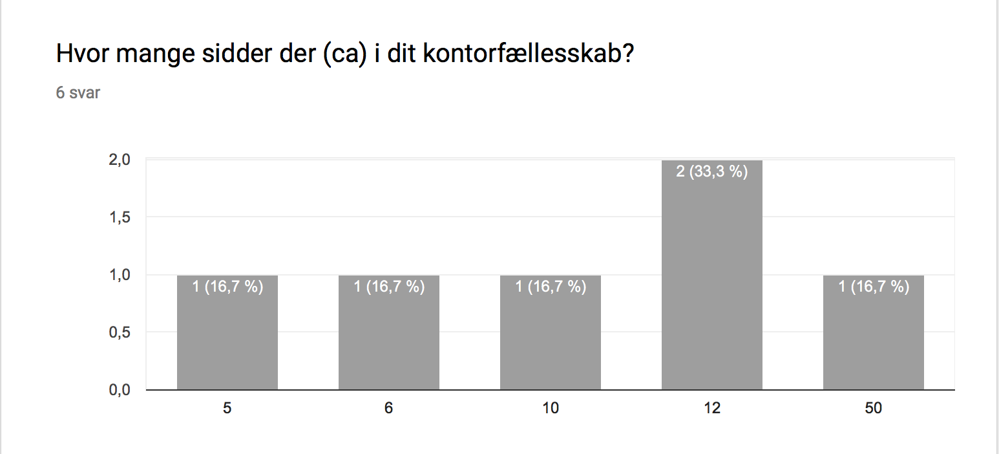
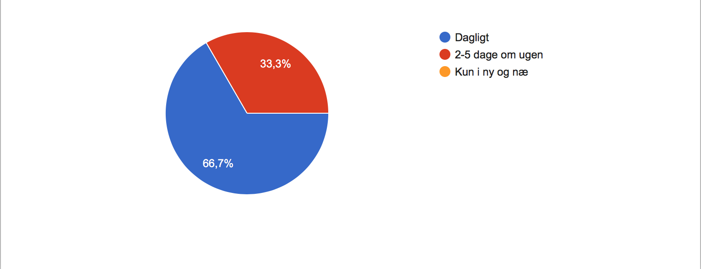

-

Nynne
-

Mathilde
-

Mia
-
Simone
-

Hans Christian
-

Cedric
Interview
IP – Anonym Medstuderende
- Hvad er dit primære erhverv?
- Selvstændig grafisk designer
- Redaktør og retoriker (Kan også kaldes kommunikationskonsulent, underviser eller oversætter.)
- Designer & skrædder
- Constructing Architect
- Art Director
- Kommunikation og markedsføring / Direktør
- Hvilket kontorfællesskab sidder du i?
- Jeg deler plads med et digitalt produktionsselskab, og vi indgår et fællesskab med dem der lejer hele etagen.
- CoPlay på Frederiksberg
- Værksted/kontorfællesskab "fabrikanterne" i Vejle
- Storrums kontor på Flæsketorvet 75-3. Sal
- Vi har ikke noget navn Korsager Studio (Esromgade)
- Hvor mange sidder der (ca) i dit kontorfællesskab? 
- Hvor ofte benytter du dig af dit kontorfællesskab? 
- Drager du nytte af andre der sidder i kontorfællesskabet? Kom gerne med eksempler
- Meget. Jeg har indgået en slags arbejdsfællesskab, hvor jeg hjælper dem med deres projekter, og de hjælper mig med mine. For tiden laver jeg identitet til en række af deres tv-programmer, tilgengæld har de stået for at optage en pilot til et program jeg har udviklet. Og så snakker vi bare meget sammen, om stort og småt i løbet af dagligdagen.
- Ja. Jeg har brugt en kollega med et oversætterbureau, da jeg fik en større opgave ind, hvor der skulle oversættes til sprog, jeg ikke havde kompetencer til. Jeg har også brugt grafikere på egne opgaver og videresendt opgaver til bl.a. en konfliktmægler og en IT-person.
- Ja, vi netværker, inspirerer og sparrer med hinanden
- Ja en del på faglig sparring om hvordan man løser forskellige opgaver
- Sparring, brug af printere, etc.
- Ja, vi køber produktionsydelser som film + redigering, af vores roommates
- Har du oplevet at få jobs via folk du sidder i kontorfællesskab med?
- Ja (2)
- Ja, ham med oversætterbureauet bruger mig løbende til mere kreative/komplicerede oversættelser, som hans egne folk (freelancere - de sidder ikke i kontorfællesskabet) ikke kan løse.
- ja
- Ja et par gange
- ja, et par gange.
- Har du hjulpet andre i kontorfællesskabet uden at modtage løn for det?
- Ja (2)
- Ja, jeg besvarer meget gerne sproglige spørgsmål eller oversætter et enkelt ord eller en linje, og jeg henviser også gerne mine kontorfællesskabet videre (uden nødvendigvis at tage kommission). Men alle er gode til ikke at kræve for meget af hinanden uden at tilbyde betaling - meget vigtigt med den respekt for hinandens tid.
- ja
- Ja det sker næsten dagligt
- ja, men også hjulpet og fået løn.
- Har du modtaget hjælp fra andre uden at betale?
- Ja (2)
- ja (2)
- Kun f.eks. når computeren/skærmen/printeren strejkende el. lign. Ja det sker næsten dagligt
- Hvad motiverer dig til at hjælpe andre i kontorfællesskabet?
- Som udgangspunkt er jeg vel grund-motiveret. For jeg valgte (og har altid valgt) kontorfællesskaber, netop for at indgå i et samarbejde, og en slags symbiose. Jeg tror altid man får det tilbage man smider i puljen. På den ene eller anden måde. Sådan i hverdagen, bliver jeg helt klart mest motiveret af at folk er igang med et spændende projekt. Og jeg prøver oftest at finde en eller anden måde at bidrage på. Nogen gange i kraft af min faglige kompetencer, andre gange ved at dele det efterhånden ret store netværk jeg har.
- At pleje vores fællesskab - at være en god kollega, selv om vi ikke er ansat i et firma.
- De er dejlige mennesker, der ligesom jeg selv, kæmper for at realisere deres jobmæssige drømme. De er alle meget hjælpsomme, den slags smitter altid ;o) Desuden giver det en indre tilfredsstillelse at kunne hjælpe andre.
- Det kommer altid godt tilbage at hjælpe andre
- Fællesskabet og samarbejdet på tværs.
- Vi er indenfor samme forretningsområde, og sparer løbende med hinanden om teknik, idéer, inspiration og issues med kunder og cases.
- Hvordan kommunikerer I i jeres kontorfællesskab? (Er der et fælles digitalt forum I kan henvende jer eller er det kun ansigt til ansigt/mail/facebook?)
- Kantinen, der er et godt miljø. folk engagerer sig.
- Er der noget du mangler i dit kontorfællesskab, der kunne gøre det nemmere at kommunikere med andre fra kontorfællesskabet?
- En app om peter ulf (med uduelige informationer) (Ulfen Peter)